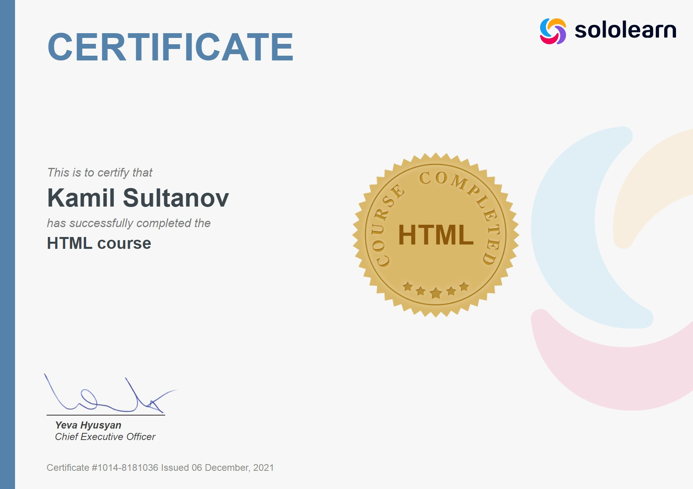

Султанов Камиль
QA-инженер
Обо мне
Мне 25, веду здоровый образ жизни и занимаюсь саморазвитием (постоянно учусь чему-то новому). Интересуюсь IT, психологией (биологией поведения человека), люблю слушать музыку и общаться. Прошел курсы по тестированию и имею хорошие навыки работы с компьютером. Разбираюсь на базовом уровне в базах данных и в программировании.
Quality assurance
Тест-кейсы
Составление тест-кейса в TestLink, TestRail и Test IT.Чек-листы
Составление чек-листаБаг-репорты
Составление баг-репортов и улучшений в Redmine, MantisBD, Bugzilla и JIRA, локализация бага.Mindmap проекта
Составление mindmap проектаОсновные техники тест-дизайтна
Классы эквивалентности и граничные значенияОсновные техники тест-анализа
В том числе Decision Table, Pairwise, State &Transition TestingИсследовательское тестирование
Прохождение по туру Уитакера, напрмер, тур по путеводителюТестирование документации
Варианты использованияАвтоматизация
Составлял тесты на готовом фреймворке, так же опыт работы в seleniumТестирование API с помощью базовых rest запросов (Комплект тестов)
- ⎯ Набор тест-кейсов, с описанием используемых входных данных, сценарием тестирования и ожидаемыми результатами
- ⎯ Зафиксированные результаты тестирования.
Тестирование Android приложения (Комплект тестов)
Документ с набором тест-кейсов, сценарием тестирования, ожидаемыми результатами и фактическими результатами.Отчёты
Составление отчетов по тестированию
Навыки+
Английский язык (A2/B1)
Аудирование и чтениеPython
Могу создать простейший консольный калькулятор в языке программирования Python (циклы, функции, немного ООП)JavaScript
Знаю основные циклы и функцииHTML CSS
Знаю структуру, тэги помню только основные(head, body), понимаю структуру CSS. Создаю сайт на HTML-CSS-JS: ссылка на сайт, так же этот сайт сделан полностью мной.API
Знаю основные методы(GET, POST, PUT, DELETE), классы статус-кодов, Postman (умею отправлять запросы), DevTools(Network, Console), Fiddler и Charles(Inspectors)Слепая печать
Слепая печать на русском и английском раскладкахMs DOS
Умею работать в консоли компьютера
Курсы и книги
- Курс «Школа начинающих тестировщиков (ШНАТ)» от Ольги Назиной.
- Книга Святослава Куликова «Тестирование программного обеспечения. Базовый курс»
- Бесплатный курс "тестирование с нуля" от YouTube-канала Artsiom Rusau QA Life
Опыт работы
-
ООО «Анкор ФинТек»(Подрядчик Яндекса).
Тестировщик(асессор) -
АО «Уфанет».
Сервис-менеджер (Есть опыт работы с ERP и составления СОП)
Образование
-
Уфимский колледж статистики, информатики и вычислительной техники.
Технике по компьютерным сетям (Системный администратор).
Сертификаты
+7(996)403-66-35
<>sultanowkamilgod@yandex.ru